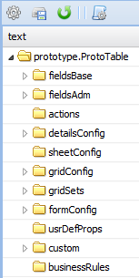

Figure 28 : option meta du menu.
Les propriétés suivantes sont les plus utilisées lors de la personnalisation de l’interface. Les propriétés non mentionnées ci-bas ne seront pas prises en compte dans ce guide d’utilisation.
fieldsBase change la définition des champs. La liste des propriétés à modifier est assez complète, mais les propriétés le plus utilisées sont: fieldLabel, header, sortable, serachable, flex tooltip et wordWrap (voir personnaliser les champs).
gridConfig personnalise la présentation de la grille principale. La liste des propriétés à modifier est assez complète, mais les propriétés le plus utilisées sont: listDisplay, searchFields, sortFields et hiddenFields (voir personnaliser la grille).
formConfig personnalise la présentation du formulaire. Le formulaire peut être personnalisé à partir de deux endroits: formConfig dans l’option Méta ou dans l’option formulaire du menu de configuration. On vous recommande de vous servir de l’option formulaire que de formConfig parce que l’option formulaire est plus conviviale pour la personnalisation. La liste des propriétés à modifier est assez complète, mais les propriétés le plus utilisées sont: tooltip, fieldLabel, labelAlign et hidden. (voir personnaliser un formulaire).